This Guide Is Accurate For TripleA v0.5.3
Written by George H. (DMA02)
Installing TripleA consists of three basic steps that can be carried out under all platforms easily. They consist of:
There are, however, only one prerequisite that one needs to fulfill before being able to install TripleA properly. All persons intending play TripleA must have a Java Virtual Machine (known as well as the JRE (Java Runtime Engine)) installed.
- Downloading TripleA
- Unzipping TripleA
- Running TripleA
TripleA is made to run with any Java Virtual Machine that is compliant to the Sun Microsystem's Java Technology. TripleA is also pre-built using Sun's Java 1.4.2 technology. So running TripleA on Java technology that does not comply to Sun's standards may not work. TripleA has been tested on several Java VMs such as BlackDown and the SGI and Mac OS X's ports of Sun's Hot Spot VM.
As of TripleA version 0.5.2 and upwards, you can use either Java 1.5 or Java 1.4 to run TripleA. So downloading and installing either Java VM from Sun is entirely up to you to decide. Below a links provided to download Java; please note that you only need the J2SE JRE package. Only developers and others who wish to compile TripleA from source need only get the JDK or SDK packages.
Assuming that you:
We can proceed to installing TripleA under the Windows platform. TripleA comes packaged in a compressed Zip file. You will need to extract the contents of the TripleA zip file somewhere on your computer (it really doesn't matter where). You will need a program to unzip the TripleA zip file. Most windows systems come with built-in zip file support which makes a zip file look like a folder with a zipper icon on it. For those persons who can see this, they may simply double click on the TripleA zip file and Windows will take over from there asking you where to unzip the contents of the file.
- Have installed Java
- Downloaded TripleA
For those persons who do not have built-in zip file support of do not wish to use Windows's zip file support, can use several other programs. There are several freeware programs such as WinZip and WinRAR that allow you to zip and unzip files (and more!). So installing either one of those packages will allow you to unzip the TripleA zip file.
Once TripleA has been successfully unzipped/extracted to a specified area on the computer. It doesn't really matter where TripleA is extracted to, so long as you know where it has been extracted to, it's all that matters. Find the folder where TripleA is located. By default the folder name should mirror the name of the TripleA zip file:
File Name -> Folder Name triplea_x_x_x.zip Would extract a folder named triplea_x_x_x
Go inside the TripleA folder using Explorer and you should see a file named triplea_windows.bat or if you have Windows configured to not display file extensions then you will see triplea_windows. This is a MS-Batch file which will run the TripleA start-up command in the Microsoft Console. Double Click on that file and TripleA will run.
Assuming that you:
We can proceed with installing TripleA on the Linux, Irix, or Mac OS X platform. TripleA is packaged in a compressed zip file, to which most Unix based systems provide useful unzipping utilities such as the unzip. This is a command line program which is run from the console/terminal. There are others that have a graphical user interface but they vary from different platforms. Since unzip is common to all three Operating Systems mentioned above for this section, we shall focus on it.
- Have installed Java
- Downloaded TripleA
Open the console/terminal for your platform. Go into the directory you have saved the TripleA zip file in. From there, run the following command:

unzip -L triplea_x_x_x.zip
Once TripleA has been successfully unzipped/extracted to a specified directory on the computer, you are now ready to run it. The unzip command above would have extracted TripleA to the current directory you are in. So you would see a folder of TripleA by the same name as the zip file.
File Name -> Folder Name triplea_x_x_x.zip Would extract a folder named triplea_x_x_x
Go inside the TripleA directory and list all the contents inside:
cd triplea_x_x_x
ls
You should be able to see a listing of the directory contents inside the TripleA directory, an example is shown below:
bin/ doc/ lib/ triplea_mac_os_x.sh
changelog.txt games/ license/ triplea_unix.sh
classes/ icons/ readme.html triplea_windows.bat
From here you will need to execute the shell script file that suits your operating system. If you are running Mac OS X then you will need to run the triplea_mac_os_x.sh script, and if your running GNU/Linux, SGI/Irix or any other UNIX variant then you must run the triplea_unix.sh file. Before attempting to run them, you will need to change the file permissions first (this applies to both Macs and Unix). Below are both the commands to change the file permission and the command to run it:
chmod +x triplea_unix.sh
./triplea_unix.sh
Thats all there is to running TripleA!
TripleA's user interface consists of a collection of 1 or more tabs. By default there are 2 tabs present: Game and Properties. The game tab gives a brief description of what game your running and what engine version your using. This being said, the game tab is divided into 3 sections: Game Type, File, and Version.
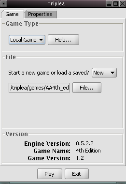
Game Type File Version Allows one to specify the type of game to be played. There are 3 possible types of games that one can play using TripleA. Those are: Local Game, Sever, Client, and PBEM. A Help button is provided to give more information on that specific section. Allows the user to select what game file they wish to load. One can either load a previously saved file, or start a new game. Displays the engine version, name of the game loaded, and the version of that game. Fig 2.0.0 Below are some screen shots of how to interact with the user interface in-order to select a game type (Fig 2.0.1) and to load a saved or new game (Fig 2.0.2)
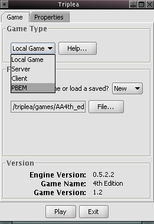 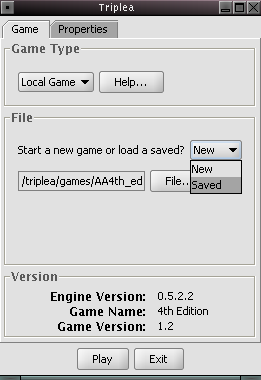 Fig 2.0.1 Fig 2.0.2 Every game will have a properties tab where an arbitrary number of property options are available. Usually these options will somehow affect how the game will be played. Once a game file is loaded, the properties tab will appear. In TripleA's case, it will remember the last game file you loaded so there will always be a pre-loaded game file, thus the properties tab will show under any circumstance.
Below are provided 2 screen shots of the how the properties tabs would look like in TripleA if the A&A Classic Edition (Fig 2.0.3) and A&A Revised Edition (Fig 2.0.4) were selected. These are just examples, some games might have more or less options.
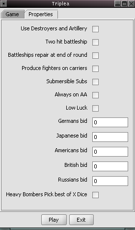 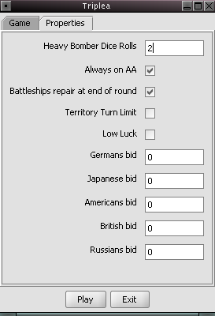
Fig 2.0.4Fig 2.0.3
A local game is one where you play a game alone and by your self. There are not any computer opponents to go against. All sides are played by 1 person (you).
To start a local game you need to:
As usual, to quit TripleA from this stage, press the Exit button.
- Start up TripleA
- Select "Local Game" from the Game Type menu
- Select the game to be played from the File menu
- Clicking on the Play button at the bottom of the main window
A server game is one where you are playing a multiplayer game where the person initiating the game is acting as the server. The server is responsible for hosting the game where multiple clients (other players running "Client Game") can connect to the server. The server also has the ability to select property options from the properties tab and is the only one able to save the game. Below are the steps needed to get a server game running:
- Start up TripleA
- Select "Server Game" from the Game Type menu
- Enter the server name in the "Server Options" dialog box
- (optional) Enter the server port number
- Click on the "Server" tab to allocate players
- Click on the Play button to start the game
Step 3 & 4.
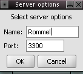
Fig 2.2.0
Name Port This will be the name of your server. It is the name that will identify your computer as the server as well as you, the player. The name can be anything you want. The port number can also be anything you want, but beware. The default port number is 3300 which seems to work fine on most systems and is the expected port number most players will use unless instructed otherwise. Also note that on UNIX machines, ports under 1024 are privileged ports and if used with TripleA will result in an error. Step 5.
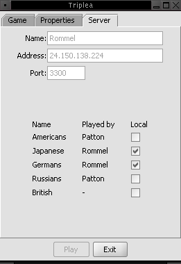 Clicking on the Server tab should yield a result like this. The server information that needs to be given to other players is listed at the very top of the tab. Once clients begin to join (connect) to the server, they will appear in the server tab. The server will have the ability to select and de-select players. Clients can only select and de-select themselves from playing national sides that are available. Fig 2.2.1
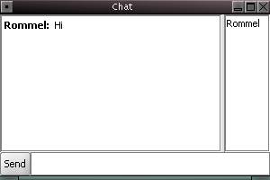 When a server game is started, there will be a chat box available for use. This is where players who join can chat to each other. The chat box is available throughout the whole game. A sound is made when a new message is typed and the window is automatically brought to the front of the screen. Of course, sounds can be disabled at any time if needed. Fig 2.2.2 Step 6.
Click the Play button and get ready to play!
A client game is one where you wish to join (connect) to a person who is creating a server game. To put it in more simpler terms, you want to join a game that someone is hosting. This requires one to start TripleA as a "client" or rather start a "Client Game." The steps needed to start TripleA as a client and connect to a dedicated server can be described in 4 steps:
- Start up TripleA
- Select "Client Game" from the game type menu
- Enter your name and server address in the client options
- Click on the "Client" tab to pick your national side
- Wait for the server to start the game
Step 3.
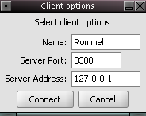
Fig 2.3.0
Name Server Port Server Address This is the name that will identify you as a player in the game. It can be whatever you want. The port number that the server is using should be entered here. By default the port number will be 3300 and should be ok most of the times, unless the person hosting as the server instructs you to use a different port number. The IP address of the server is needed for the client to connect to the server. This is essential to most things in everyday life as well. To get to a destination, one must need to know where it is located. On the Internet we have the IP address as our location. The server should provide you with their IP address in order for you to connect as a client. Step 4.
Once connected to the server you will be faced with a chat window (Fig 2.3.1) and the main TripleA start-up window. Two things will be changed from the main TripleA window at this moment:
- The properties tab will be removed
- A client tab will appear (Fig 2.3.2)
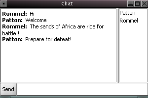 All players (clients and server) will be able to see each other in the chat window. The chat window will (by default) produce a sound whenever a new message is received. On the arrival of a new message the window will automatically be brought to the front of the screen to grab the user's attention. Fig 2.3.1
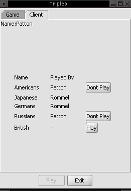 The client tab allows one to decide what national side they wish to play. This will also show what other players have chosen as well. A Play button will be displayed next to any available position that can be taken. In accordance, a Don't Play button will be displayed next to the side that you currently selected, should you wish to cancel your action and pick another side. Only the server is allowed to forcefully reset a client's selection. Fig 2.3.2 Step 5.
Wait for the server to start the game.
TripleA's Play By EMail mode allows persons to play a game via EMail without having to be connected to each other online. PBEM also allows players more time to think over various moves they have to do and ideal for those persons who live under strict time constraints, and cannot spend hours and hours online playing games.
TripleA's PBEM mode has advantages and disadvantages, to which the advantages out weigh the latter. They are as follows:
- Advantages of PBEM
- More time to think out moves
- Only need to come online to send your turn to the next player
- Dice rolls are done by a dedicated dice server that is independent of TripleA
- All dice rolls are PGP Verified and email to every player
- Every move and every dice roll is logged and saved in TripleA's History Window
- An online game can be later continued under PBEM mode
- Hard for others to cheat
- Disadvantages of PBEM
- Cannot save and mail your turn while in the middle of a battle sequence
- Casualties for both sides during a battle must be selected by the person currently playing
A PBEM game can be initiated in 10 steps shown below:
- Start up TripleA
- Select "PBEM" from the game type menu
- Select the PBEM saved file that an opponent sent you or begin a new PBEM game, from the file menu
- Click on the "PBEM" tab
- Enter the email addresses of the persons involved in the PBEM game (including your own)
- Click the "Test EMail" button to make sure the Dice Server is up and running and that the emails you entered are valid.
- Start the game by pressing the Play button
- Play your turn
- Save your game at the end of your turn
- EMail your saved game to your opponent
Step 2.
Select a PBEM Game
Fig 2.4.0 Step 3.
If you are starting a brand new game, then select "New" from the file menu and continue to step 4. Otherwise select "Saved" from the file menu and pick the saved game that you were sent by another player and then proceed to step 4.Step 4 & 5.
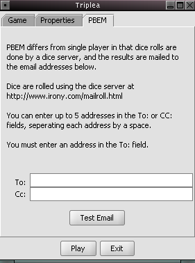
EMail Address 1 EMail Address 2 Enter your email address so that you get emailed the dice rolls you will be using during your turn. Enter your opponent's email address so that they will also be emailed the dice rolls you used during your turn. Also note that only in this address box you can put more than 1 address. Each email address has to be separated by a single space. See Fig 2.4.2 for an example of multiple emails. Fig 2.4.1

EMail Address 2 More than 1 address can be placed in this email box. Each email must be separated by a single space. As always make sure your email addresses you enter are valid. Fig 2.4.2 Step 6.
Once all email addresses are filled in, it is now ready for testing. The email tests are very useful for the casual PBEM player. It will determine if the syntax of your email addresses are correct and if the actual Dice Server is operational or not. It will also display an error if TripleA is unable to connect to the Dice Server. Sometimes when a firewall is blocking TripleA from contacting the Dice Server, it will fail the test and a friendly message will instruct you on possible ways to trouble-shoot the problem.
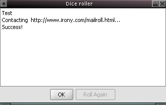 A successful test yielding desirable results. This will also result in an email being mailed to the addresses. The email will show the test dice rolls and a PGP signature that can be verified from the Dice Server's home page. Fig 2.4.3
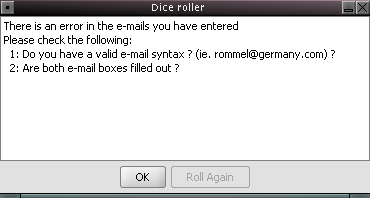 A test that has failed due to an improperly typed email address or if one of the address boxes was left empty. Fig 2.4.4 Steps 7, 8, 9 & 10.
These steps are very self evident. Pressing the play button and playing your turn. Once the turn is over, save the game, and then email it to the player whose turn is next.Here are some "Practical Guidelines" for playing PBEM with TripleA that has been contributed by the TripleA PBEM community. They address certain issues such as what to do during battles and file naming conventions.
Practical Guidelines for PBEM
Playing TripleA over the net allows for continuous Axis and Ally game play. With it, you don’t need five or six hours dedicated to one game. You can participate in a game whenever you can. You can even start a game via the Client / Server model and continue it via PBE. You can exchange the save game file via instant messenger, FTP server, or email and pick it back up in a Client / Server game whenever you can. Here are some general guidelines to help you keep your game play going.
Selecting Casualties
When selecting casualties you should follow an agreed guideline. A common guideline is to select casualties according to the cost of the piece. For land units it would follow this order: Infantry, Artillery, Armor, Fighters, Bombers. When losing a bomber in a land battle it would do well to consider the interest of your opponent. If you would lose the bomber before a fighter to hold onto the territory then do that with your opponent’s best interest in mindContinuing the example for sea battles, casualties would be selected in this order: Transports, Submarines, Fighters, Destroyers, Loaded Transports, Carriers, Battleships. Submersible submarines give exception; if a submarine is by itself or with empty transports then it submerges on the first round.
Types of PBEM play
Standard PBEM: this kind of game is described in the TripleA documentation. You select the PBEM option and enter your email address and your opponents email address. If there is more than two involved in the game you enter your email address and the email address of the person whose turn follows yours.
Confirmable PBEM: we use this kind of game to keep the game easy on our inbox. You select the PBEM option but you use the groups email address. Create one email address for your group and send all dice rolls to that address (use it for both email fields). The group moderator should have the password to this email account. This way dice rolls can still be confirmed if they are called into question and no inboxes get flooded with dice results.
Trust Game: In this game we do not use the PBE option.
Naming Schemes
Once your turn is complete you send the save game file to the other players. It is helpful to use a descriptive naming scheme. An example is using the first initial of every player round – turn and version info. For instance if nabiy, underdog, and drec were playing version 0.4.6 and it was Russia’s turn in the second round of play the name of the file should be: nud2-1RS046.svg3.0 In Game Interface
* NOTE * Due to TripleA being a turn based strategy engine, we cannot describe how the in game interface will be like since it is left up-to the developer's implementation. We will concentrate on one of the existing games that comes included with TripleA, Axis and Allies Revised Edition.
After starting a game, you will be faced with the main game window. A screen shot is provided below where various aspects of it will be discussed and explained.
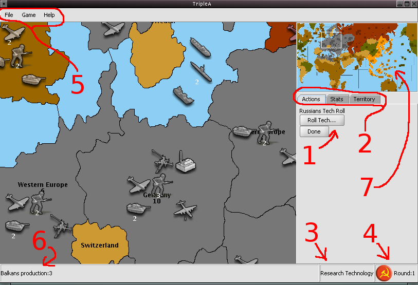
Fig 3.0.1
- The Actions tab. This is where the bulk of your decision making will be. Buttons displaying unit purchases, combat engagements, and tech rolling will generally show up here.
- These are the 3 main tabs Actions, Stats, and Territory
- This box displays what phase of your turn you are currently at
- This box displays the round number as well as an image indicating what national side is currently playing their turn
- These are the in game menus that can be accessed at any time
- This is a general information area where information is displayed whenever the mouse cursor is hovering above the map. In the current case it is informing us of the production capacity of the Balkans
- The mini-map is a representation of the main map but scaled down. One can move move around the map using the mini-map by clicking on it with the mouse, or by left-clicking and dragging the mouse
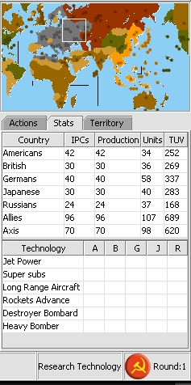
Fig 3.0.2
Fig 3.0.3The Stats tab will show various statistics about the current game being played. The number of IPCs, total IPC production, number of units and the Total Unit Value (TUV) of each side is tracked in the first table. The second table below keeps track of the technological advancements of each nation. The Territory tab shows the types and quantities of units that are currently located in a given territory at the location of the mouse cursor.

Fig 3.0.4
Show Current Game Switches to the current game being played (used when your in History mode) Show History Switches to History mode Unit Size Allows the selection of various unit sizes Map Skins Allows the selection of various custom map skins Enable Sound Toggles sounds on or off Show Map Details Toggles relief images on or off. Normally this is toggled automatically by each map's personal map.properties file. View Game Options View the options currently active for the game. This is the same as viewing the "Properties" tab when in the main TripleA window. Confirm Enemy Casualties Will prompt the user to press "OK" after each battle step. Toggling it off will increase speed of battle casualty selection. Show Dice Stats Will show you a window displaying the frequency of dice rolls.
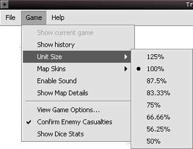
Fig 3.0.5
Fig 3.0.6An extended view of the various unit sizes that are allowed to be selected. An example of the dice stats window. This will show the distribution of all the dice rolled in the current game. They should come up uniformly distributed. A useful feature to check every now and then if one feels that the dice are being skewed or maybe just for educational purposes. There are probably more aspects to the main interface where most of the gaming takes place but it would be too long and tedious to cover in great detail. The rest of the main interface will be easily discovered and understood at the user's own time. The main and most important aspects of the main in game interface has been covered and should be enough to get anyone started and familiar with TripleA on first use.
4.0 Purchasing Units
Purchasing units is relatively simple. At the start of each turn a button will appear in the status area (right side of TripleA). This button, when pressed, will popup the purchase window. All purchasable units are listed along with their price (in our case the price is listed as IPCs). Once the purchases are made, you are brought back to the main game window. You are to proceed further, or undo your current purchases. Note that if you accidentally forgot to purchase units, you will be notified with a warning before it is too late. Please see Fig 4.0.0 for an example of the purchase window.
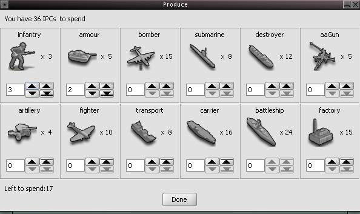
Fig 4.0.05.0 Unit Movement
There are certain aspects to movement within the game, specifically two aspects. First, is the movement of the user with in the game. That is moving (or panning) around the map. Secondly, is the movement of the user's units after completing the first step.
- Navigating the Map
- Movement is allowed using the horizontal and vertical scroll bars
- Placing the mouse cursor at the edge of the map will also allow movement
- Right-Click and hold the right mouse button down, then drag the mouse around the map. This is known as the "drag scrolling" feature of TripleA implemented by lnxduk
- Moving Units
- Left-Click on the source territory once
- Move the mouse and left-click on the destination territory
- From the movement box that appears, select what units need to be moved
- When a movement path is undesirable somehow. One can forcefully specify a custom route. It is done by conducting step 1, then right after instead of proceeding to step 2; you right click once in each territory you want your units to pass through. When that is done, we proceed to step 2 and continue to step 3.
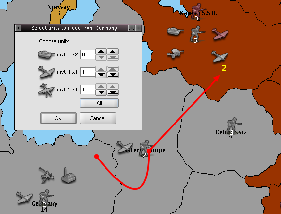
Fig 5.0.0The example to the left depicts the movement of units from Germany to Karelia S.S.R. A red movement arrow is drawn to indicate what territories the units will be passing through. Once the mouse has left-clicked on Karelia S.S.R, the movement box appears. We can make a choice on what units we would like to move.
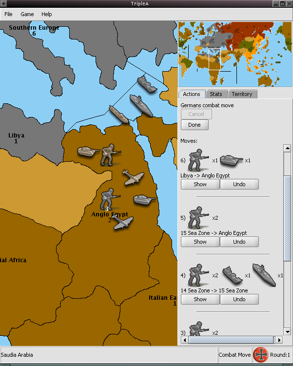
Fig 5.0.1The example to the left shows a pre-combat engagement where units were moved from Lybia, and Southern-Europe to conduct an amphibious assault on Anglo-Egypt. The status tab of TripleA shows a list of consecutive movements that have been carried out. The source and destination of each move is tracked along with the number and image of each unit that moved. Each move can be undone. Clicking on the show button will force TripleA to draw the movement arrows for that particular movement and focus the map onto that specific area in which the movement has occured. 6.0 Combat Engagements
After the combat moves are laid out and ready. The next logical step is to engage in combat. The battles will all be laid out in the Actions tab on the right hand side of TripleA. They're laid out as a series of consecutive buttons, each button labeled with the name of the territory where a battle will be fought. Some battles are required that they be fought before others. Such is true with a combination of amphibious assaults and naval battles that occur in the same region. See figure 6.0.0 for an example of such a combination.
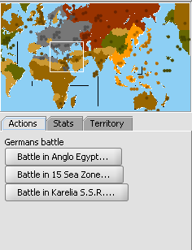
Fig 6.0.0This is an example of a battle to be held in Anglo-Egypt by the Germans vs. the British. As can be seen, there are 3 battles that are to take place.
- Land combat from Lybia to Egypt
- Amphibious combat from Sea Zone 15 to Egypt
- An extra battle in Karelia S.S.R
The battle on land for Egypt is listed first before the naval battle in Sea Zone 15 (this is because there is a British destroyer defending the Suez canal). It appears like this because we have moved the land troops in first before moving in the naval units. Either way, TripleA will pop-up a warning message notifying us that the battle in Sea Zone 15 must occur first before the land battle Egypt. If the naval battle goes well for the Germans then the amphibious assault will continue, if not, then the Germans are stuck without an amphibious assault.Now for an actual example of how the battles are actually fought. After clicking on one of the buttons from the Actions tab. A battle window will appear. In this window is where the dice are rolled to show the outcome of the battle. See figure 6.0.1 for a full description of the battle window.
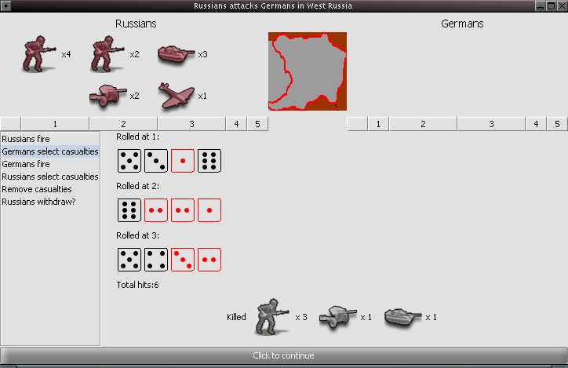
Fig 6.0.1Each unit image is shown in their respective column, at the top, based on their attack and defense values. The above image shows 4 Russian infantry units in a column labeled 1; this means they can only attack when the dice rolls a 1. The same goes for all the other attack units. Similarly, for the defending German units; the 3 infantry are in the 2 column indicating that they can only defend if a 1 or a 2 is rolled.
- Attackers are listed on the left
- Defenders are listed on the right
- Battle Steps for all warring factions are in the left column
- Dice rolls are listed in the empty area in the middle of the window
- Red colored dice are hits
- Black colored dice are misses
There is a long horizontal button at the bottom of the battle window. This button is used when you need to select casualties or just need to press it to continue.7.0 History Mode
TripleA's History Mode feature records the entire history of the current game being played. All rounds, turns, movements, tech research, battle rolls ...etc every ting is tracked, logged, and recorded. The information in the History Mode is also saved when you save the game. It also allows one to browse through the History Mode and TripleA will focus on parts of the map and draw movement arrows accordingly to recreate what happened during that instance of time. Furthermore, during battles, dice and unit images are displayed in the Actions tab as well.
Fig 7.0.0History Mode can be activated at any time during the game. By going through the Game menu and selecting the Show history menu item, one will activate the History Mode.
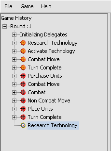
Fig 7.0.1A section of the History Mode that shows the initial levels of the current game. The example to the left shows the game phases of Russia, Germany, and (currently) the Research phase of the British.
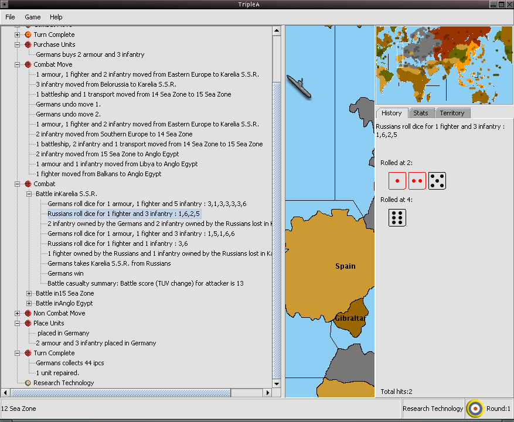
Fig 7.0.2A fully exapanded example of the History Mode. 8.0 Game Properties
Each game that runs with the TripleA engine is allowed to have various properties applied to the game. These properties are hard-coded into the game and can be turned activated / deactivated or completely omitted from games. Below is a table of game property specifications written by Ali Ibrahim:
Property name Description Always on AA Boolean property. When true, AA guns fire in non-combat phase. Use Destroyers and Artillery Boolean property. When true, adds destroyers and artillery to classic game, do not use with 4th edition. Territory Turn Limit Boolean property. When true, each country cannot lose more ipcs than a territory is worth in a single round due to SBRs or rocket attacks. Low Luck Boolean property. When true enables low luck dice rolling. Please see user documentation for more information. Note that this option does not function correctly with the heavy bombers pick best of X dice option. Submersible Subs Boolean property. When true, subs use 4th edition rules for submerging in battles and for passing underneath other units. Heavy Bomber Dice Rolls Integer property. Specifies the number of dice rolls for heavy bombers. If property not specified then the number of dice rolls is 3. Heavy Bombers Pick best of X Dice Boolean property. When true, heavy bombers have only 1 roll which is the best of the number of dice normally rolled. This option when true will not work with the low luck option. Two hit battleship Boolean property. When true, battleships take 2 hits to be destroyed. Battleships repair at end of round Boolean property. When true, battleships are repaired at the end of the turn. Should only be true when Two hit battleship is true. Neutral Territory Charge Integer property. Specifies number of ipcs needed to violate neutrality in classic game. Has no effect in 4th edition Max Factories Per Territory Integer property. Maximum number of factories per territory. Produce fighters on carriers Boolean property. When true fighters can be produced on carriers directly when both are produced at the same time. Note that this does not allow existing fighters to be moved to carriers. Country bid Integer property. Specifies the number of bid ipcs a country receives. 8.1 Low Luck
Low luck is a methodology for rolling dice which reduces the variance inherent in dice rolling. It guarantees that the number of hits in a certain set of rolls will not differ from the average number of hits by more than one. The details of the implementation as well as a general discussion of low luck can be found in the DAAK club at http://www.daak.de/aarll/aarllregel.php?sprache=e.
The low luck option can be enabled by putting a check mark in the box next to "Low Luck" in the properties tab before the game is started. This option must be specified by the server in a multi player game. Low luck has not been tested for PBEM games. The current implementation does not support low luck rolling for SBR's or techs, instead normal rules are used in these two cases. The number of dice rolled in a phase of a battle should never be more than one. The number of hits will be indicated at the bottom of the combat window and will be equal to the number of guaranteed hits plus one if the only dice rolled is a hit. No dice may be rolled if the outcome is guaranteed because no fractional dice are needed.
-Ali Ibrahim9.0 F.A.Q
Q: I am using windows and I keep getting "Bad command or file name" what do I do?
A: You haven’t installed or set up the java virtual machine correctly. Go to Installing TripleAQ: I am a Linux or Mac OS X user and I keep getting "Exception in thread "main" java.lang.NoClassDefFoundError: games/strategy/engine/framework/GameRunner"
A: This error occurs when there are no compiled classes for java to run. In other words, you might have accidently downloaded the source package instead of the pre-compiled package.Q: I get "Unable to create server socket: Connection timed out: connect"!
A: This basically means TripleA could not find the server to connect to. Are you behind a Firewall that is blocking you? Is the server behind a Firewall blocking your connections? Is your router set up properly for Port Forwarding? Or maybe the server went offline.Q: No matter how many times I re-download TripleA, it keeps saying it is corrupted!
A: Try using a different UnZipping utility. If that doesn't work try re-downloading TripleA using a different program. There was a case where Mozilla browser kept saving the Zip file in a corrupted state.Q: Don't ask me how.. but I can't seem to turn on the AI, how can I do it manually?
A: Visit this linkQ: What can I do if I spot a SeaZone connection problem and want to fix it fast?
A: You can edit the XML game file manually as shown here.Q: How do I report a bug?
A: Report bugs either on the TripleA message board or at the Project home page. when doing so please follow this Bug Reporting guide.Q: Any way of getting an observer in the game?
A: Yes, by having the observer connect to your game and not selecting any countries. You can have many observers. One warning. They cannot leave during the middle of the game! If they do, it will halt the game and crash (not really crash but you guys would have to start over from a saved game).10.0 Credits & Acknowledgements
- Iron Cross : TripleA Banner and background watermark
- Ali Ibrahim : Game Properties and Low Luck sections
- Naiby : Practical Guidelines for PBEM section
- Sean Bridges : About TripleA section (and of course for TripleA itself)